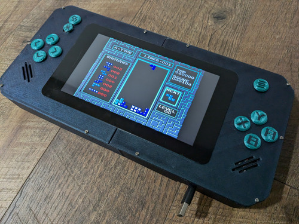

PPi 7
The 7th iteration of the Portable Pi, also the first with working custom buttons, the other 6 happened to not get recorded due to being made too long before this one. This is designed like a steamdeck but for retro games only, running a rpi3B
Status: Scrapped
